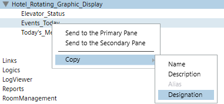

Customize List of Graphics to Display
Skip this step if you are displaying all the graphics that appear under the Graphics node.
To display a customized set of graphics and viewports in the rotation, each one must be listed in the Rotating Graphics profile you create. The location of any object in System Browser that has a Related Item graphic can also be used. For example a device data point, or device.
- The Rotating Graphics profile (.LDL) you created in the previous procedure is open in a text editor and you have configured the file according to Step 2 – Configure the Rotating Graphics File.
- In System Browser navigate to and then right-click on the graphic you want to display, and from the context menu select Copy > Designation.

- Right-click next to the first
GraphicListKioskMode keyand click Paste from the context menu and then add a semi-colon at the end of the line:
For example:GraphicListKioskMode: System1.ApplicationView:ApplicationView.Graphics.Device2;NOTE: Each graphic must be listed on one line without line breaks. - The graphics will display and rotate after the default value of 30 seconds.
- (Optional) To change the default display time for the graphic, after the semi-colon, type a comma (,) and then type a value for the override in seconds.
For Example:GraphicListKioskMode: System1.ApplicationView:ApplicationView.Graphics.Device2;,60 - Repeat Step 1 through Step 3 for each graphic until you have entered all the graphics and viewports for the rotating display.
- Save the customized profile according to your text editor.
- Proceed to 4 – Set the Favorite Graphic and Associate the User to the Profile.